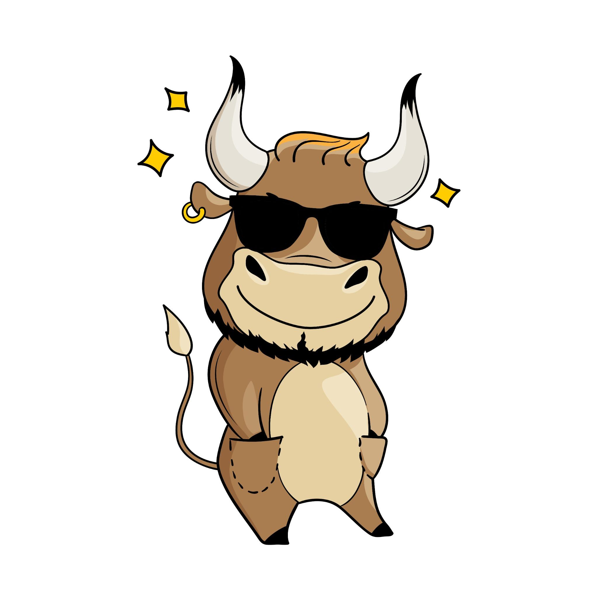
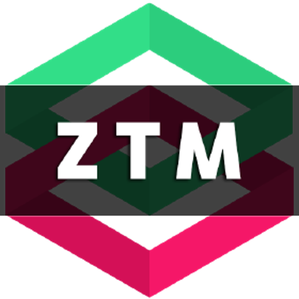

Mr. Bas
Exploring intelligence through code.
With a background as a Java Developer specializing in test automation, there's a strong foundation in software quality and continuous integration. Recently, the journey has expanded into the field of Artificial Intelligence, with a focus on Machine Learning and Deep Learning. This page serves as a personal portfolio and timeline of that ongoing learning path into AI and intelligent systems.
| Apr 2025 |   |
🧠 Followed the 5-Day Gen AI Intensive Course with Google
➡️ currently working on the Capstone project: Java Code Review with Generative AI |
|
| Feb 2025 |  |
Started the TensorFlow for Deep Learning Bootcamp: Zero to Mastery to deepen my understanding of machine learning and deep learning. ➡️ Working on this course in this repo: TensorFlow Colab Notebooks |
|
| Feb 2025 | Completed the Complete A.I. Machine Learning and Data Science: Zero to Mastery course by Andrei Neagoie and Daniel Bourke. |
Learning Focus
- 🧠 Deep Learning (CNNs, RNNs)
- 📦 TensorFlow & Keras
- 🔥 PyTorch
- 📊 Model Evaluation & Deployment
- 🐍 Python, NumPy, Pandas
“The best way to learn is by building.”